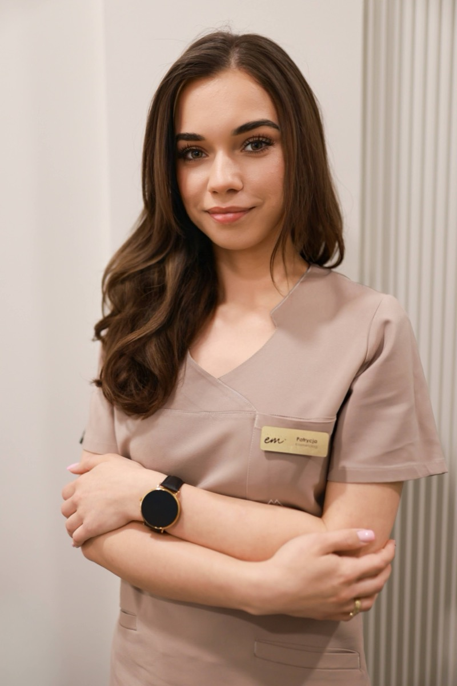
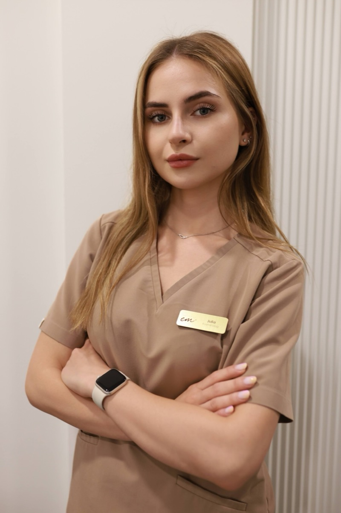

Zespół INSTYTUTem.™
Imię, nazwisko i pełna odpowiedzialność za Twoją skórę.
Za każdym autorskim protokołem w INSTYTUTem.™ stoi konkretny ekspert — nie anonimowy personel. Poznaj zespół, który łączy medyczny standard technologii z bezkompromisową troską o Twoje bezpieczeństwo.
Standard Medyczny & Autorskie Protokoły
Ewelina Majchrzak
Od dekady udowadniam, że nowoczesna kosmetologia i medycyna estetyczna nie muszą oznaczać przerysowania. W mojej pracy opieram się na twardych podstawach medycznych, precyzyjnej anatomii i autorskich protokołach łączonych. Przeprowadzam Cię przez proces terapeutyczny według jednej, nienaruszalnej zasady: profesjonalnie doradzam, ale kiedy zabieg nie leży w Twoim interesie — uczciwie go odradzam.
Zarezerwuj terminPraktyka Zabiegowa & Hi-Tech
Eksperci świadomej terapii skóry
Certyfikowane kosmetolożki pracujące na medycznych technologiach i autorskich protokołach eliminujących dyskomfort.

Patrycja
Mistrzyni wyciszania stanów zapalnych i przywracania skórze równowagi biologicznej. Do każdej cery podchodzi z dociekliwą diagnostyką.
Zarezerwuj termin
Julia
Ekspertka procedur aparaturowych i modelowania ciała. Dba o to, by każda sesja łączyła kliniczną precyzję z głębokim relaksem.
Zarezerwuj termin
Nikola
Bezpieczeństwo i komfort pacjenta stawia na pierwszym miejscu. Prowadzi epilację według naszego autorskiego protokołu chłodzenia, całkowicie zdejmując lęk przed bólem.
Zarezerwuj termin
Krzysztof Majchrzak
Odpowiadam za to, co dzieje się wokół zabiegu: bezkompromisową jakość technologii medycznej, architekturę butikowego komfortu i spokój naszych gości. Dbamy o to, by INSTYTUTem.™ było miejscem, w którym od wejścia czujesz pełną transparentność, dyskrecję i najwyższy standard opieki.